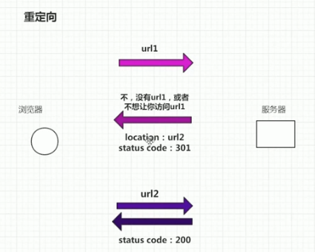
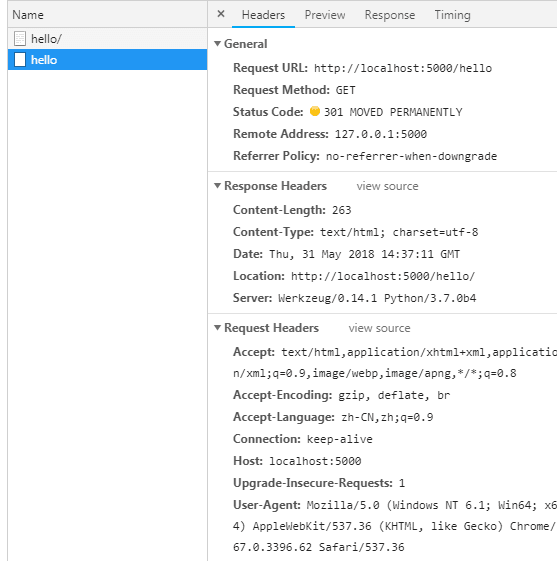

Flask 学习笔记|01 Flask入门基础
1.0 pipenv 的安装与使用
# 安装pipenv
pip install pipenv
# 进入虚拟环境（需要在项目目录上执行，如果当前目录没有虚拟环境，则会新建虚拟环境，如果有则启用该虚拟环境）
pipenv shell
# 退出虚拟环境
exit
# 使用pipenv安装Python包
pipenv install #{package}
# 卸载Python包
pipenv uninstall #{package}
# 查看按照包的依赖关系
pipenv graph
# 查看虚拟环境执行文件路径
pipenv --venv
1.1 flask最小应用
# 实例化，构造函数的参数会作为Flask app核心对象的标识
app = Flask(__name__)
# 启动web app
# debug=True开启调试模式 1.修改文件后不用每次都重启服务器 2.可以在网页中显示异常
# host可以指定可以访问本网站的ip地址
# port启动端口
app.run(host="0.0.0.0", port=81, debug=True)
1.2 注册路由（使用装饰器）
# 通过@app.route装饰器来注册路由，其中的参数为url路径。对应会调用hello()函数
@app.route("/hello")
def hello():
"""定义视图函数-mvc 中的controller"""
return "我就不说hello world"
如果直接使用/hello 那么不能兼容浏览器不能访问/hello/和/hello，解决办法，路径定义改成/hello/
@app.route("/hello/")
def hello():
return "我就不说hello world"
在路径xxx后添加斜杠/后就可以访问xxx/ 和 xxx的原理
重定向：当你访问url1的时候，服务器返回状态码302让用户访问url2 
访问http://localhost:5000/hello,观察浏览器网络请求情况，可以看到发生了重定向，重定向到了hello/ 
为什么这么做呢？
这是因为，如果不做重定向不带/ 的（hello）和带/的（hello/）都可以访问到视图函数，那么就是说同一个视图函数对应着两个不同的路由，没有保证唯一url的原则
唯一url的好处
如果有两个url，那么在搜索引擎中会被索引两次，这样会浪费性能，影响搜索引擎的优化，没有这个必要。
1.3 注册路由（使用flask内置函数）
另一种注册路由的函数，通过调用app的add_url_rule函数
app.add_url_rule("/hello",view_func=hello)
实际上方法1装饰器的模式，内部就是调用了add_url_rule函数。下面来看一下源码
def route(self, rule, **options):
"""A decorator that is used to register a view function for a
given URL rule. This does the same thing as :meth:`add_url_rule`
but is intended for decorator usage::
@app.route('/')
def index():
return 'Hello World'
For more information refer to :ref:`url-route-registrations`.
:param rule: the URL rule as string
:param endpoint: the endpoint for the registered URL rule. Flask
itself assumes the name of the view function as
endpoint
:param options: the options to be forwarded to the underlying
:class:`~werkzeug.routing.Rule` object. A change
to Werkzeug is handling of method options. methods
is a list of methods this rule should be limited
to (``GET``, ``POST`` etc.). By default a rule
just listens for ``GET`` (and implicitly ``HEAD``).
Starting with Flask 0.6, ``OPTIONS`` is implicitly
added and handled by the standard request handling.
"""
def decorator(f):
endpoint = options.pop('endpoint', None)
# 可以看到这里就是调用了add_url_rule，self就是我们实例化的app对象
self.add_url_rule(rule, endpoint, f, **options)
return f
return decorator
1.4 flask配置文件和app.run()相关参数
# 载入配置文件
app.config.from_object("config")
# 读取配置文件
print(app.config["DEBUG"])
陷阱1：配置文件中的key必须是全大写 陷阱2：DEBUG是flask里的一个默认变量，如果想要覆盖，必须名字一模一样
1.5 if name = “main”
简单理解：加入这个判断以后，只有在启动入口文件以后，才会执行。而在被其他模块导入的时候不会执行
深入理解其原因是：在生产环境中，我们是使用nginx+uwsgi来部署python项目，其中uwsgi用来启动flask服务，这个时候，根本fisher.py只是作为一个模块被调用，这时加上入口判断，在生产环境中就只不会执行app.run方法。否则的话就会启动两个flask服务。
if __name__ == "__name__":
app.run(host=app.config["HOST"], debug=app.config["DEBUG"], port=app.config["PORT"])
1.6 响应对象Response
在视图函数中，返回的内容实际上是一个Response对象，这是由Flask对其进行了封装。
@app.route("/hello")
def hello():
return "我就不说hello world"
上述的代码中就是返回的字符串转换成了Response对象。一个Response对象中还包含由HTTP状态码，消息类型和消息内容等东西。
@app.route("/hello")
def hello():
return "我就不说hello world"
Response中的几个属性
headers: 设置请求头信息status:String类型的数据，格式为这种："200 ok"status_code:int类型，就是状态码，但是不能是自定义的状态码data: 需要返回到前端的数据set_cookie：设置cookie的值del_cookie：删除cookie，不会立马删除浏览器上报错的cookie值，会讲过期时间设置为当前时间，还是cookie创建的时间，这样就表示过期了，浏览器会自动删除。
@app.route("/hello")
def hello():
response = Response("this is a page")
response.status_code = 200
return response
- 原文作者：Binean
- 原文链接：https://bzhou830.github.io/posts/20160501flask01/
- 版权声明：本作品采用知识共享署名-非商业性使用-禁止演绎 4.0 国际许可协议进行许可，非商业转载请注明出处（作者，原文链接），商业转载请联系作者获得授权。